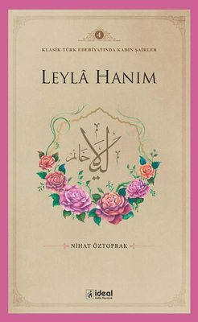

From Couplet to Heart · Episode 12
What Is the Real Skill in This World?
Drawing on the lines “The art in this world is to take delight in hardship / The sorrow and joy of the heavens come and go,” we discuss how to face life's difficulties, troubles, and suffering.
Nihat Öztoprak · 9:01 ·
Transcript in the original Turkish
Description
Kıymetli edebiyat dostları, Seyf TV ekranlarında yayınlanan "Beyitten Gönüle" programının bu bölümünde Prof. Dr. Nihat Öztoprak ile Divan edebiyatının inceliklerine dalıyor ve 19. yüzyıl şairlerinden Enderunlu Vasıf'ın dillerden düşmeyen o meşhur beytini şerh ediyoruz.
"Mihneti kendine zevk etmedir alemde hüner / Gam u şadi-i felek böyle gelir böyle gider" dizelerinden yola çıkarak; hayatta karşılaştığımız zorluklara, dertlere ve sıkıntılara (mihnet) nasıl göğüs germemiz gerektiğini konuşuyoruz. Fıtnat Hanım, Esat Efendi, Nabi ve Memduh Paşa gibi büyük şairlerin beyitleriyle zenginleşen bu sohbette; hüznü feryada dönüştürmeden yaşamanın, sabrın, tevekkülün ve zorlukların ardındaki gizli lütufların (Hazreti Yusuf kıssası) edebi şifrelerini keşfedeceksiniz.
İyi seyirler dileriz!
0:00 - 1:21 : Enderunlu Vasıf'ın Meşhur Beyti ve Genel Manası
1:22 - 3:39 : Mihnet Nedir? Sıkıntılara Karşı Sabır, Tedbir ve Tevekkül
3:40 - 5:32 : Fıtnat Hanım ve Esat Efendi'nin Şiirlerinde "Mihnet" Kavramı
5:33 - 6:54 : Sıkıntıların İnsana Faydaları: Hazreti Yusuf ve Şair Nabi'den Örnekler
6:55 - 8:45 : Leyla ile Mecnun Üzerinden Hakiki Dert ve Kapanış

Books by this speaker


Leylâ Hanım: Klasik Türk Edebiyatında Kadın Şairler 4
Buy

Şiirin Zarif Kalemleri: Klasik Türk Edebiyatında Kadın Şairler 1
Buy

Okuyup Yazarak Yaşamak: Prof. Dr. Kemal Yavuz Armağanı
Buy
From this program

From Couplet to Heart
What Brings the World to Ruin?
Nihat Öztoprak 6:49

From Couplet to Heart
What Is True Happiness? An Instructive Couplet by Murad III
Nihat Öztoprak 6:46

From Couplet to Heart
Couplets Chosen by the Masters II
Nihat Öztoprak 29:29

From Couplet to Heart
The Masters' Favorite Couplets
Nihat Öztoprak 36:15

From Couplet to Heart
Why Did We Come to This World?
Nihat Öztoprak 9:17

From Couplet to Heart
A Storm Cannot Topple Those Who Live Righteously!
Nihat Öztoprak 14:19

From Couplet to Heart
How to Decipher a Couplet? What is Textual Commentary?
Nihat Öztoprak 19:25

From Couplet to Heart
How Does Sin Darken the Heart?
Nihat Öztoprak 8:57